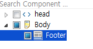
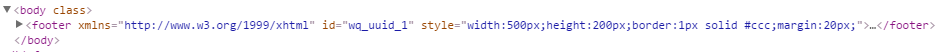

19.Footer (HTML5)
<footer> 태그는 문서 또는 문장의 바닥글을 작성하기 위한 태그 입니다. footer는 일반적으로 문서의 저자, 저작권 정보, 이용약관, 연락처 등의 정보를 포함하고 있습니다.
19.1Property
Property | Description |
|---|---|
id | 컴포넌트의 ID로 전역객체로 할당되며 script에서 본 id로 컴포넌트에 접근이 가능하다. |
19.2브라우저 캡쳐화면

[그림 19-1]01
19.3CSS Overriding

[그림 19-2]02
No | Class | Description |
|---|---|---|
1 |
| websquare의 style 편집기에서 해당 style을 직접 수정합니다. |
19.4주의사항 및 Tip
html5에 추가 요소로서 웹스퀘어 에서의 컴포넌트 로서는 따로 속성이 없으며 필요할경우 Attribute Add로 버튼으로 속성을 추가해준다.